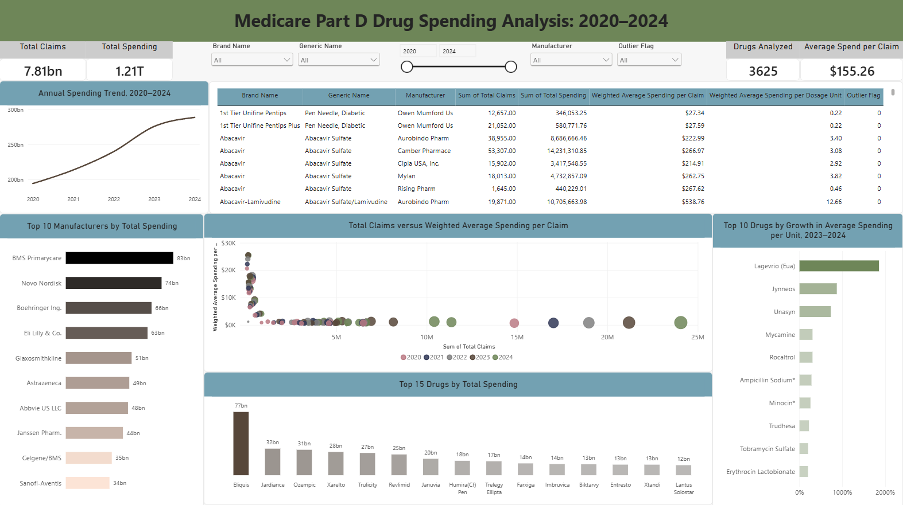

Medicare Part D Drug Spending Analysis
Power BI
An interactive Power BI analysis of Medicare Part D prescription drug spending, claims, manufacturers, and changes in unit cost from 2020 through 2024.
Project Objective
This project examines prescription drug spending within the Medicare Part D program. The analysis was designed to identify major spending patterns, compare drugs and manufacturers, and highlight products with substantial growth in unit cost over the five-year period.
Data Source
The analysis uses publicly available Medicare Part D prescription drug spending data from the Centers for Medicare and Medicaid Services. The dataset includes annual information about prescription drugs, manufacturers, claims, total spending, and average spending per unit.
Data Preparation
The data were prepared for analysis by reviewing field types, organizing annual spending measures, and creating calculations for comparisons across years. Additional measures were used to summarize total spending, claim volume, manufacturer activity, and changes in unit cost.
Power BI Dashboard
The interactive dashboard allows users to examine spending by drug and manufacturer, compare claims with total expenditures, review annual trends, and identify medications experiencing notable changes in average unit cost.
Filters and interactive visuals make it possible to move from an overall view of Medicare Part D spending to more detailed comparisons of individual drugs and manufacturers.

Skills Demonstrated
- Data cleaning and transformation with Power Query
- Power BI data modeling
- DAX measures and calculated fields
- Interactive dashboard development